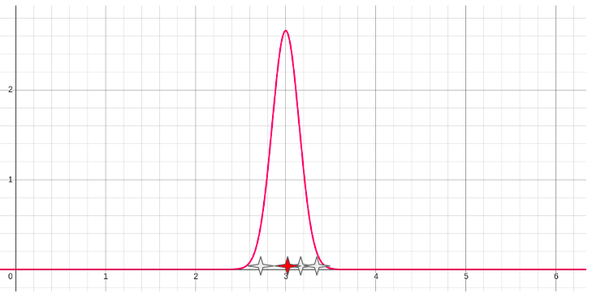
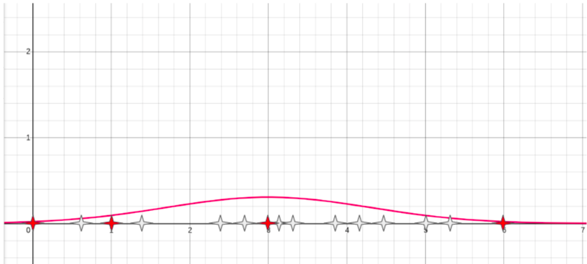
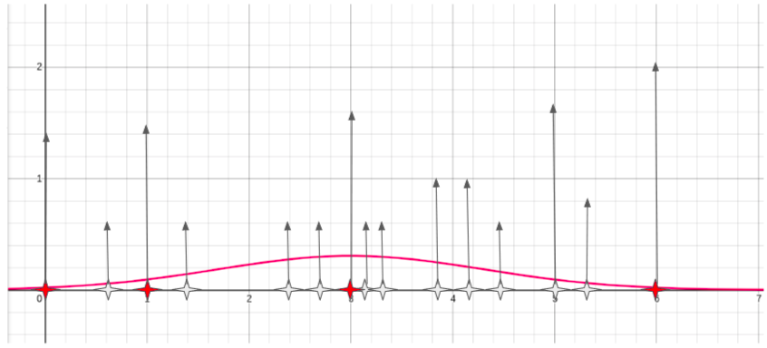
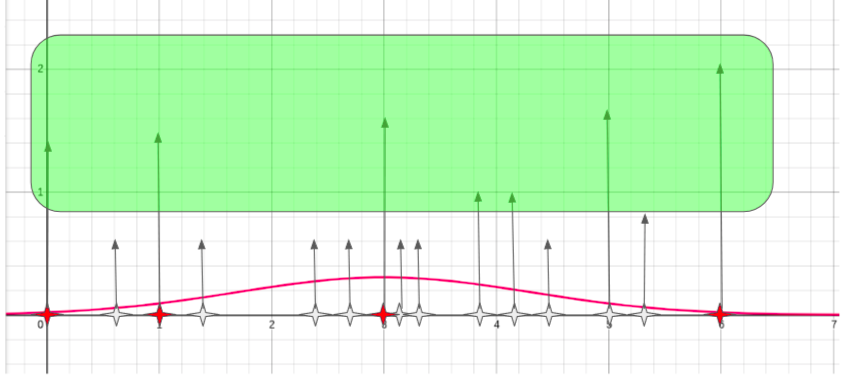

Effective data generation for explaining decision services
When working with decision services, it’s often hard to understand the rationale behind the output for a given prediction. A noteworthy example is the one related to having a decision service for loan approval denying the loan request to a given user. The user would surely like to know the rationale behind such a denial.
Within TrustyAI initiative we developed an optimized implementation of the LIME (aka Local Interpretable Model agnostic explanations) that is well suited for the decision-service scenario (see our preprint). LIME is a widely known algorithm for detecting which input features were mostly responsible for the output of classifiers/regressors/etc.
One key aspect in LIME is to meaningfully perturb the original input features in order to generate close yet reasonable copies of the input data to pass to the AI model/decision service. Such perturbed copies are used to build a surrogate (linear) model which will lead to the generation of the final feature scores.
One of the difficulties of extending the original LIME implementation to the decision service scenario has been to deal with missing training data. In fact, LIME leverages training data that has been used to train a classifier (for instance) in order to decide how to perturb the numerical features. In particular it uses training data points to decide which reasonable value a perturbed numerical feature might have.
Let’s imagine to have the loan approval request having a bunch of features, one of them is the number of people in the family of the person making the loan request. Of course valid numbers for such a value would be 1, 2, 3, 4, etc., not -1 nor 0.123 or 10000.
In a common machine learning scenario by passing through existing values of such a feature within the training set, it would be clear that good values would be integers bigger than 1, and rarely bigger than 20. However in the decision service scenario we cannot make any such assumption, as the decision service could be anything (a proper black-box) from a rule based engine to a neural network. Additionally the training data, even if originally available, might not be available at the time when the explanation is requested.
In order to address this concern the TrustyAI implementation of LIME has originally started with a simple solution: to generate new values for a given numerical feature, sample values from a standard normal distribution centered around the original feature value. For example, if the original feature value were 3 (in red), we could sample points below the bell curve in the following graph:

Here the sampled values (in white) would have values of 2.7, 3.2 and 3.3. The problem with these samples is that they are not meaningful for "numbers of people in the family", there are either 2 or 3, not 2.7 persons.
While training data might not be available, decision services are often used over time on a number of different inputs. We could use those past predictions and a technique from statistics called bootstrap to calculate more accurate parameters for the Gaussian distribution. With bootstrap you sample (with replacement) many times to obtain statistical measures like mean, standard deviation over bootstrapped samples that can be used to generate a better suited normal distribution.
This way we obtain more samples, some of them might be meaningful (red ones), some of them might not. This partially solves the problem since many (white) points are still hardly likely in reality.

In order to filter out the bad points, we observe that the decision service is more confident when it make predictions with "likely" inputs. So, given the samples generated with bootstrap, we calculate the confidence of the decision service (regardless of the actual decision output). The confidence defines how much "confident" is the service in the output decision. So we plot the confidence of inputs having each of the generated data points.

We can pick an area in the plot where confidence is above high (e.g. above the mean confidence value), and only pick those samples whose confidence fall in that area.

This leads to less but more likely points, which in turn will generate more pertinent perturbations and therefore better explanations for the decision service at hand.
In our example the final list of generated samples still contains a couple of unlikely points (3.9, 4.1) while the other points are likely values for our "number of persons in the family" feature (0, 1, 3, 5, 6).
If you’re curious about the technical details of the implementation you can check the related PR within the kogito-apps repository.